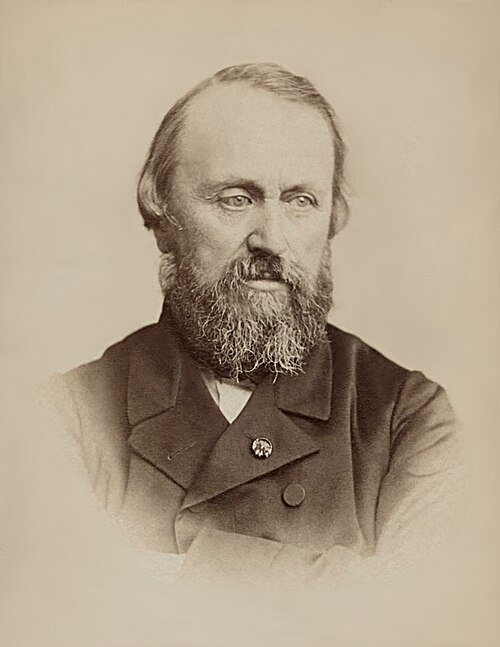
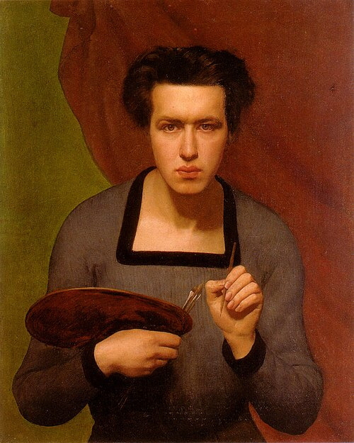
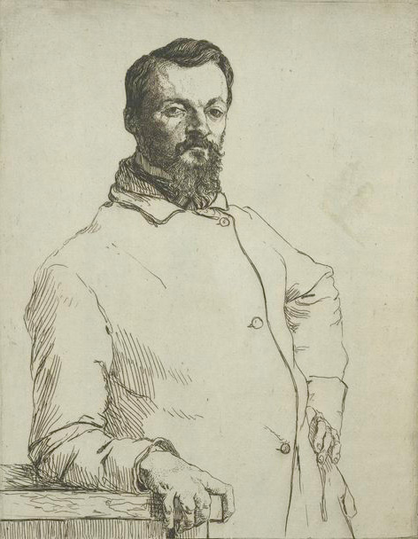

Salon of 1846
Some Draughtsmen
De quelques dessinateurs
Dans le chapitre précédent, je n’ai point parlé du dessin imaginatif ou de création, parce qu’il est en général le privilège des coloristes. Michel-Ange, qui est à un certain point de vue l’inventeur de l’idéal chez les modernes, seul a possédé au suprême degré l’imagination du dessin sans être coloriste. Les purs dessinateurs sont des naturalistes doués d’un sens excellent ; mais ils dessinent par raison, tandis que les coloristes, les grands coloristes, dessinent par tempérament, presque à leur insu. Leur méthode est analogue à la nature ; ils dessinent parce qu’ils colorent, et les purs dessinateurs, s’ils voulaient être logiques et fidèles à leur profession de foi, se contenteraient du crayon noir. Néanmoins ils s’appliquent à la couleur avec une ardeur inconcevable, et ne s’aperçoivent point de leurs contradictions. Ils commencent par délimiter les formes d’une manière cruelle et absolue, et veulent ensuite remplir ces espaces. Cette méthode double contrarie sans cesse leurs efforts, et donne à toutes leurs productions je ne sais quoi d’amer, de pénible et de contentieux. Elles sont un procès éternel, une dualité fatigante. Un dessinateur est un coloriste manqué.
In the preceding chapter I did not speak of imaginative or creative drawing, because it is generally the privilege of colorists. Michelangelo, who from a certain point of view is the inventor of the ideal among the moderns, alone possessed the imagination of drawing in the highest degree without being a colorist. Pure draughtsmen are naturalists endowed with excellent sense; but they draw by reason, whereas colorists, great colorists, draw by temperament, almost without knowing it. Their method is analogous to nature: they draw because they color, and pure draughtsmen, if they wished to be logical and faithful to their profession of faith, would confine themselves to black pencil. Nevertheless they apply themselves to color with inconceivable ardor and do not perceive their contradictions. They begin by delimiting forms in a cruel and absolute manner, then want to fill those spaces. This double method continually thwarts their efforts and gives all their productions something bitter, painful, and contentious. They are an eternal lawsuit, a tiring duality. A draughtsman is a failed colorist.
Cela est si vrai que M. Ingres , le représentant le plus illustre de l’école naturaliste dans le dessin, est toujours au pourchas de la couleur. Admirable et malheureuse opiniâtreté ! C’est l’éternelle histoire des gens qui vendraient la réputation qu’ils méritent pour celle qu’ils ne peuvent obtenir. M. Ingres adore la couleur, comme une marchande de modes. C’est peine et plaisir à la fois que de contempler les efforts qu’il fait pour choisir et accoupler ses tons. Le résultat, non pas toujours discordant, mais amer et violent, plaît toujours aux poëtes corrompus ; encore quand leur esprit fatigué s’est longtemps réjoui dans ces luttes dangereuses, il veut absolument se reposer sur un Velasquez ou un Lawrence.
This is so true that M. Ingres, the most illustrious representative of the naturalistic school in drawing, is always in pursuit of color. Admirable and unhappy stubbornness! It is the eternal story of people who would sell the reputation they deserve for the one they cannot obtain. M. Ingres adores color like a milliner. It is pain and pleasure at once to contemplate the efforts he makes to choose and pair his tones. The result, not always discordant but bitter and violent, always pleases corrupt poets; and when their tired mind has long rejoiced in these dangerous struggles, it absolutely wants to rest upon a Velázquez or a Lawrence.
Si M. Ingres occupe après E. Delacroix la place la plus importante, c’est à cause de ce dessin tout particulier, dont j’analysais tout à l’heure les mystères, et qui résume le mieux jusqu’à présent l’idéal et le modèle. M. Ingres dessine admirablement bien, et il dessine vite. Dans ses croquis il fait naturellement de l’idéal ; son dessin, souvent peu chargé, ne contient pas beaucoup de traits ; mais chacun rend un contour important. Voyez à côté les dessins de tous ces ouvriers en peintures, — souvent ses élèves ; — ils rendent d’abord les minuties, et c’est pour cela qu’ils enchantent le vulgaire, dont l’œil dans tous les genres ne s’ouvre que pour ce qui est petit.
If M. Ingres occupies the most important place after E. Delacroix, it is because of that very particular drawing whose mysteries I was analyzing just now, and which so far best summarizes ideal and model. M. Ingres draws admirably well, and he draws quickly. In his sketches he naturally makes the ideal; his drawing, often lightly loaded, does not contain many strokes, but each renders an important contour. Look beside them at the drawings of all those painting workmen—often his pupils. They render minutiae first, and that is why they delight the vulgar, whose eye in every genre opens only for what is small.
Dans un certain sens, M. Ingres dessine mieux que Raphaël, le roi populaire des dessinateurs. Raphaël a décoré des murs immenses ; mais il n’eût pas fait si bien que lui le portrait de votre mère, de votre ami, de votre maîtresse. L’audace de celui-ci est toute particulière, et combinée avec une telle ruse, qu’il ne recule devant aucune laideur et aucune bizarrerie : il a fait la redingote de M. Molé ; il a fait le carrick de Cherubini ; il a mis dans le plafond d’Homère, — œuvre qui vise à l’idéal plus qu’aucune autre, — un aveugle, un borgne, un manchot et un bossu. La nature le récompense largement de cette adoration païenne. Il pourrait faire de Mayeux une chose sublime.
In a certain sense, M. Ingres draws better than Raphael, the popular king of draughtsmen. Raphael decorated immense walls, but he would not have made your mother's portrait, your friend's, or your mistress's as well as Ingres. His audacity is peculiar, and combined with such cunning that he recoils from no ugliness and no oddity: he painted M. Molé's frock coat; he painted Cherubini's greatcoat; in the Ceiling of Homer—a work aiming at the ideal more than any other—he placed a blind man, a one-eyed man, a one-armed man, and a hunchback. Nature rewards him generously for this pagan adoration. He could make Mayeux sublime.
La belle Muse de Cherubini est encore un portrait. Il est juste de dire que si M. Ingres, privé de l’imagination du dessin, ne sait pas faire de tableaux, au moins dans de grandes proportions, ses portraits sont presque des tableaux, c’est-à-dire des poëmes intimes.
The beautiful Muse of Cherubini is still a portrait. It is fair to say that if M. Ingres, deprived of the imagination of drawing, does not know how to make paintings—at least on a grand scale—his portraits are almost paintings, that is, intimate poems.
Talent avare, cruel, coléreux et souffrant, mélange singulier de qualités contraires, toutes mises au profit de la nature, et dont l’étrangeté n’est pas un des moindres charmes ; — flamand dans l’exécution, individualiste et naturaliste dans le dessin, antique par ses sympathies et idéaliste par raison.
A parsimonious, cruel, angry, suffering talent; a strange mixture of contrary qualities, all placed at nature's service, whose strangeness is not among its least charms—Flemish in execution, individualistic and naturalistic in drawing, antique in sympathies and idealistic by reason.
Accorder tant de contraires n’est pas une mince besogne : aussi n’est-ce pas sans raison qu’il a choisi pour étaler les mystères religieux de son dessin un jour artificiel et qui sert à rendre sa pensée plus claire, — semblable à ce crépuscule où la nature mal éveillée nous apparaît blafarde et crue, où la campagne se révèle sous un aspect fantastique et saisissant.
Reconciling so many opposites is no small task. It is therefore not without reason that, to display the religious mysteries of his drawing, he chose an artificial light that serves to make his thought clearer—like that twilight in which barely awakened nature appears pallid and raw, and the countryside reveals itself under a fantastic and striking aspect.
Un fait assez particulier et que je crois inobservé dans le talent de M. Ingres, c’est qu’il s’applique plus volontiers aux femmes ; il les fait telles qu’il les voit, car on dirait qu’il les aime trop pour les vouloir changer ; il s’attache à leurs moindres beautés avec une âpreté de chirurgien ; il suit les plus légères ondulations de leurs lignes avec une servité d’amoureux. L’ Angélique , les deux Odalisques , le Portrait de M me d’Haussonville, sont des œuvres d’une volupté profonde. Mais toutes ces choses ne nous apparaissent que dans un jour presque effrayant ; car ce n’est ni l’atmosphère dorée qui baigne les champs de l’idéal, ni la lumière tranquille et mesurée des régions sublunaires.
A rather peculiar fact, and one I believe has gone unnoticed in M. Ingres's talent, is that he applies himself more willingly to women. He makes them as he sees them, for one would say he loves them too much to wish to change them; he clings to their smallest beauties with a surgeon's sharpness; he follows the slightest undulations of their lines with a lover's servility. Angelica, the two Odalisques, and the Portrait of Mme d'Haussonville are works of profound sensuality. But all these things appear to us in an almost frightening light, for it is neither the golden atmosphere bathing the fields of the ideal nor the tranquil and measured light of the sublunary regions.
Les œuvres de M. Ingres, qui sont le résultat d’une attention excessive, veulent une attention égale pour être comprises. Filles de la douleur, elles engendrent la douleur. Cela tient, comme je l’ai expliqué plus haut, à ce que sa méthode n’est pas une et simple, mais bien plutôt l’emploi de méthodes successives.
M. Ingres's works, which result from excessive attention, demand equal attention if they are to be understood. Daughters of pain, they engender pain. This comes, as I explained above, from the fact that his method is not one and simple but rather the employment of successive methods.



Autour de M. Ingres, dont l’enseignement a je ne sais quelle autorité fanatisante, se sont groupés quelques hommes dont les plus connus sont MM. Flandrin , Lehmann et Amaury Duval .
Around M. Ingres, whose teaching possesses some fanatical authority I cannot define, several men have grouped themselves, the best known being MM. Flandrin, Lehmann, and Amaury-Duval.
Mais quelle distance immense du maître aux élèves ! M. Ingres est encore seul de son école. Sa méthode est le résultat de sa nature, et, quelque bizarre et obstinée qu’elle soit, elle est franche et pour ainsi dire involontaire. Amoureux passionné de l’antique et de son modèle, respectueux serviteur de la nature, il fait des portraits qui rivalisent avec les meilleures sculptures romaines. Ces messieurs ont traduit en système, froidement, de parti pris, pédantesquement, la partie déplaisante et impopulaire de son génie ; car ce qui les distingue avant tout, c’est la pédanterie. Ce qu’ils ont vu et étudié dans le maître, c’est la curiosité et l’érudition. De là ces recherches de maigreur, de pâleur et toutes ces conventions ridicules, adoptées sans examen et sans bonne foi. Ils sont allés dans le passé, loin, bien loin, copier avec une puérilité servile de déplorables erreurs, et se sont volontairement privés de tous les moyens d’exécution et de succès que leur avait préparés l’expérience des siècles. On se rappelle encore la Fille de Jephté pleurant sa virginité ; — ces longueurs excessives de mains et de pieds, ces ovales de têtes exagérés, ces afféteries ridicules, — conventions et habitudes du pinceau qui ressemblent passablement à du chic, sont des défauts singuliers chez un adorateur fervent de la forme. Depuis le portrait de la princesse Belgiojoso, M. Lehmann ne fait plus que des yeux trop grands, où la prunelle nage comme une huître dans une soupière. — Cette année, il a envoyé des portraits et des tableaux. Les tableaux sont les Océanides, Hamlet et Ophélie. Les Océanides sont une espèce de Flaxman, dont l’aspect est si laid, qu’il ôte l’envie d’examiner le dessin. Dans les portraits d’ Hamlet et d’ Ophélie , il y a une prétention visible à la couleur, — le grand dada de l’école ! Cette malheureuse imitation de la couleur m’attriste et me désole comme un Véronèse ou un Rubens copiés par un habitant de la lune. Quant à leur tournure et à leur esprit, ces deux figures me rappellent l’emphase des acteurs de l’ancien Bobino, du temps qu’on y jouait des mélodrames. Sans doute la main d’Hamlet est belle ; mais une main bien exécutée ne fait pas un dessinateur, et c’est vraiment trop abuser du morceau, même pour un ingriste.
But what an immense distance from master to pupils! M. Ingres is still alone in his school. His method is the result of his nature and, however bizarre and stubborn it may be, it is frank and, so to speak, involuntary. A passionate lover of antiquity and of his model, a respectful servant of nature, he makes portraits that rival the best Roman sculptures. These gentlemen have coldly, deliberately, pedantically turned into a system the displeasing and unpopular part of his genius; for what distinguishes them above all is pedantry. What they saw and studied in the master was curiosity and erudition. Hence these searches for thinness and pallor and all these ridiculous conventions, adopted without examination and without good faith. They went into the past, far, very far, to copy deplorable errors with servile childishness, and voluntarily deprived themselves of all the means of execution and success prepared for them by the experience of centuries. People still remember Jephthah's Daughter Mourning Her Virginity—those excessively long hands and feet, those exaggerated ovals of heads, those ridiculous affectations: conventions and habits of the brush that look very much like chic and are singular defects in a fervent worshiper of form. Since the portrait of Princess Belgiojoso, M. Lehmann has made nothing but overlarge eyes in which the pupil swims like an oyster in a soup tureen. This year he sent portraits and paintings. The paintings are The Oceanids, Hamlet, and Ophelia. The Oceanids are a kind of Flaxman whose appearance is so ugly that it removes any desire to examine the drawing. In the portraits of Hamlet and Ophelia there is an obvious pretension to color—the school's great hobbyhorse! This wretched imitation of color saddens and depresses me like a Veronese or Rubens copied by an inhabitant of the moon. As for their bearing and spirit, these two figures remind me of the bombast of actors at the old Bobino in the days when melodramas were played there. Hamlet's hand is beautiful, no doubt; but a well-executed hand does not make a draughtsman, and this is truly abusing the morceau, even for an Ingres follower.
Je crois que M me Calamatta est aussi du parti des ennemis du soleil ; mais elle compose parfois ses tableaux assez heureusement, et ils ont un peu de cet air magistral que les femmes, même les plus littéraires et les plus artistes, empruntent aux hommes moins facilement que leurs ridicules.
I believe Mme Calamatta also belongs to the party of the sun's enemies; but she sometimes composes her pictures quite happily, and they have something of that magisterial air which women, even the most literary and artistic, borrow from men less easily than they borrow their absurdities.

M. Janmot a fait une Station, — le Christ portant sa croix, — dont la composition a du caractère et du sérieux, mais dont la couleur, non plus mystérieuse ou plutôt mystique, comme dans ses dernières œuvres, rappelle malheureusement la couleur de toutes les stations possibles. On devine trop, en regardant ce tableau cru et luisant, que M. Janmot est de Lyon. En effet, c’est bien là la peinture qui convient à cette ville de comptoirs, ville bigote et méticuleuse, où tout, jusqu’à la religion, doit avoir la netteté calligraphique d’un registre.
M. Janmot has made a Station—Christ Carrying His Cross—whose composition has character and seriousness, but whose color, no longer mysterious or rather mystical as in his recent works, unfortunately recalls the color of every possible Station. Looking at this raw and shiny painting, one guesses too easily that M. Janmot is from Lyon. Indeed, this is exactly the painting suited to that city of countinghouses, a devout and meticulous city where everything, even religion, must have the calligraphic neatness of a ledger.


L’esprit du public a déjà associé souvent les noms de M. Curzon et de M. Brillouin : seulement, leurs débuts promettaient plus d’originalité. Cette année, M. Brillouin, — À quoi rêvent les jeunes filles, — a été différent de lui-même, et M. Curzon s’est contenté de faire des Brillouin. Leur façon rappelle l’école de Metz, école littéraire, mystique et allemande. M. Curzon, qui fait souvent de beaux paysages d’une généreuse couleur, pourrait exprimer Hoffmann d’une manière moins érudite, — moins convenue. Bien qu’il soit évidemment un homme d’esprit, — le choix de ses sujets suffit pour le prouver, — on sent que le souffle hoffmannesque n’a point passé par là. L’ancienne façon des artistes allemands ne ressemble nullement à la façon de ce grand poëte, dont les compositions ont un caractère bien plus moderne et bien plus romantique. C’est en vain que l’artiste, pour obvier à ce défaut capital, a choisi, parmi les contes les moins fantastiques de tous, Maître Martin et ses apprentis , dont Hoffmann lui-même disait : « C’est le plus médiocre de mes ouvrages ; il n’y a ni terrible ni grotesque, qui sont les deux choses par où je vaux le plus ! » Et malgré cela, jusque dans Maître Martin , les lignes sont plus flottantes et l’atmosphère plus chargée d’esprits que ne les a faites M. Curzon.
The public mind has already often associated the names of M. Curzon and M. Brillouin; only their beginnings promised more originality. This year M. Brillouin, in What Young Girls Dream Of, has been unlike himself, while M. Curzon has been content to make Brillouins. Their manner recalls the Metz school, a literary, mystical, German school. M. Curzon, who often makes beautiful landscapes of generous color, could express Hoffmann in a less learned, less conventional way. Although he is obviously a man of wit—the choice of his subjects is enough to prove it—one feels that the Hoffmannesque breath has not passed through there. The old manner of German artists in no way resembles that of this great poet, whose compositions have a far more modern and Romantic character. In vain, to remedy this capital defect, the artist chose among the least fantastic of all Hoffmann's tales Master Martin and His Journeymen, of which Hoffmann himself said: ‘It is the most mediocre of my works; it contains neither the terrible nor the grotesque, the two things in which I am best!’ And even so, even in Master Martin, the lines are more floating and the atmosphere more charged with spirits than M. Curzon has made them.
À proprement parler, la place de M. Vidal n’est point ici, car ce n’est pas un vrai dessinateur. Cependant elle n’est pas trop mal choisie, car il a quelques-uns des travers et des ridicules de MM. les ingristes, c’est-à-dire le fanatisme du petit et du joli, et l’enthousiasme du beau papier et des toiles fines. Ce n’est point là l’ordre qui règne et circule autour d’un esprit fort et vigoureux, ni la propreté suffisante d’un homme de bon sens ; c’est la folie de la propreté.
Strictly speaking, M. Vidal's place is not here, because he is not a true draughtsman. Yet the choice is not altogether bad, for he has some of the faults and absurdities of the followers of Ingres: fanaticism for the small and pretty, enthusiasm for beautiful paper and fine canvases. This is not the order that reigns and circulates around a strong and vigorous mind, nor the sufficient cleanliness of a sensible man; it is the madness of cleanliness.
Le préjugé Vidal a commencé, je crois, il y a trois ou quatre ans. À cette époque toutefois ses dessins étaient moins pédants et moins maniérés qu’aujourd’hui.
The Vidal prejudice began, I think, three or four years ago. At that time, however, his drawings were less pedantic and mannered than they are today.
Je lisais ce matin un feuilleton de M. Théophile Gautier, où il fait à M. Vidal un grand éloge de savoir rendre la beauté moderne. — Je ne sais pourquoi M. Théophile Gautier a endossé cette année le carrick et la pèlerine de l’ homme bienfaisant ; car il a loué tout le monde, et il n’est si malheureux barbouilleur dont il n’ait catalogué les tableaux. Est-ce que par hasard l’heure de l’Académie, heure solennelle et soporifique, aurait sonné pour lui, qu’il est déjà si bon homme ? et la prospérité littéraire a-t-elle de si funestes conséquences qu’elle contraigne le public à nous rappeler à l’ordre et à nous remettre sous les yeux nos anciens certificats de romantisme ? La nature a doué M. Gautier d’un esprit excellent, large et poétique. Tout le monde sait quelle sauvage admiration il a toujours témoignée pour les œuvres franches et abondantes. Quel breuvage MM. les peintres ont-ils versé cette année dans son vin, ou quelle lorgnette a-t-il choisie pour aller à sa tâche ?
This morning I was reading a feuilleton by M. Théophile Gautier in which he greatly praises M. Vidal for knowing how to render modern beauty. I do not know why M. Théophile Gautier has put on this year the greatcoat and cape of the benevolent man, for he has praised everyone, and there is no miserable dauber whose paintings he has not catalogued. Has the hour of the Academy—that solemn and soporific hour—perhaps already struck for him, since he has become so good-natured? Does literary prosperity have such disastrous consequences that it forces the public to call us to order and place our old certificates of Romanticism before our eyes? Nature endowed M. Gautier with an excellent, broad, poetic mind. Everyone knows what savage admiration he has always shown for frank and abundant works. What drink have the painters poured into his wine this year, or what opera glass has he chosen for his task?
M. Vidal connaît la beauté moderne ! Allons donc ! Grâce à la nature, nos femmes n’ont pas tant d’esprit et ne sont pas si précieuses ; mais elle sont bien autrement romantiques. — Regardez la nature, monsieur ; ce n’est pas avec de l’esprit et des crayons minutieusement apointés qu’on fait de la peinture ; car quelques-uns vous rangent, je ne sais trop pourquoi, dans la noble famille des peintres. Vous avez beau appeler vos femmes Fatinitza, Stella, Vanessa, Saison des roses, — un tas de noms de pommades ! — tout cela ne fait pas des femmes poétiques. Une fois vous avez voulu faire l’Amour de soi-même , — une grande et belle idée, une idée souverainement féminine, — vous n’avez pas su rendre cette âpreté gourmande et ce magnifique égoïsme. Vous n’avez été que puéril et obscur.
M. Vidal knows modern beauty! Come now! Thanks to nature, our women are not so witty and not so precious; but they are much more Romantic. Look at nature, sir. Painting is not made with wit and pencils sharpened to a needlepoint, for some people, I hardly know why, place you in the noble family of painters. You may call your women Fatinitza, Stella, Vanessa, Season of Roses—a heap of names for pomades!—none of that makes poetic women. Once you wanted to make Self-Love—a great and beautiful idea, a supremely feminine idea—but you did not know how to render that greedy harshness and magnificent selfishness. You were merely childish and obscure.
Du reste, toutes ces afféteries passeront comme des onguents rancis. Il suffit d’un rayon de soleil pour en développer toute la puanteur. J’aime mieux laisser le temps faire son affaire que de perdre le mien à vous expliquer toutes les mesquineries de ce pauvre genre.
Besides, all these affectations will pass like rancid ointments. One ray of sunlight is enough to bring out their full stench. I prefer to let time do its work rather than waste mine explaining to you all the pettiness of this poor genre.